이 포스트는 정규표현식에 대한 기초 사항을 설명하진 않는다.
대신 다양한 케이스와 테스트 하는 방법 등등에 대해 포커스를 맞춘다.
정규표현식의 기초에 대해 궁금한 사람들은 아래 링크를 참조하길 바란다.
http://www.nextree.co.kr/p4327/
정규표현식을 책의 목차의 제일 마지막에 있는 것을 보아 가장 어려운 내용인 줄 알았는데,
안 어렵다. 쉽다.
클로저, 콜백 등등의 개념을 몰라도 당장 익히는데 전혀 무리가 없다.
그리고 안 써먹으면 까먹는다. 당연하다.
필자도 쓸 때마다 찾아봐서 테스트하지, 그렇다 해도 시간이 절대 오래 걸리지 않는다.
필요한 내용만 찾아서 쓰고 테스트하면 되고, 도움을 주는 여러가지 것들이 많으니 당장 배워보길 바란다.
또한 다른 프로그래밍 언어에서도 조금씩 다른 형태로 지원하니 알아두면 좋다.
목차
정규표현식은 왜 쓸까?
정규표현식은 문자열을 가지고 놀 때 쓴다.
정규표현식을 쓰지 않아도 되지만 코드를 줄이기 위해서 사용한다.
아래 코드를 봐보자.
3번 케이스가 정규표현식을 사용한 경우이다.
이렇듯 정규표현식은 꼭 쓰지 않아도 되지만 코드의 길이를 확연하게 줄여주기도 한다.
테스트해보기
테스트 해보려고 일일이 콘솔창에 찍는 방법이 있지만 귀찮다.
정규표현식 테스트를 지원하는 에디터도 있지만, 그런 것에 구애받지 않고 테스트 하는 방법을 소개한다.
아래 사이트로 접속해보자.
http://regexr.com/
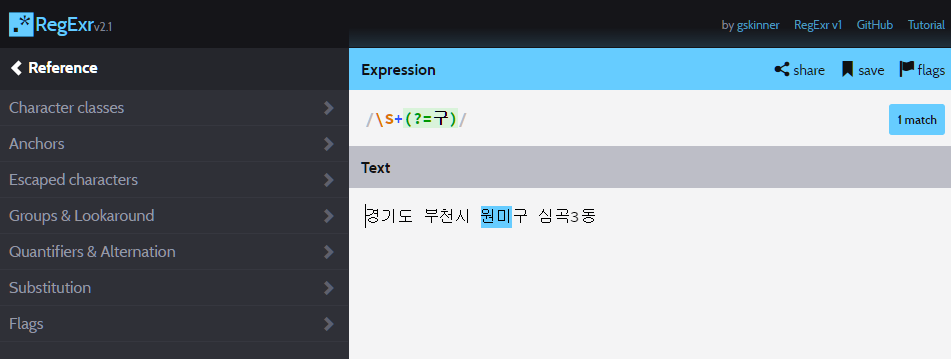
설명이 필요 없을 정도로 사용 방법은 쉽다.
좌측 메뉴를 적극 활용하면 자신이 원하는 케이스들을 쉽게 찾을 수 있다.
응용하기
이제부터는 다양한 사례를 통해 어떻게 응용해야할지 알아보자.
끝말잇기 한방 단어 금지시키기
사용 기법: not whitespace → \S, one or more → +, character set → [슘륨녘]
끝말잇기를 하다보면 한방 단어로 끝낼 때가 있다.
한 판이면 상관 없지만 매번 똑같이 당하면 아주 짜증나기 마련이다.
특히 륨, 늄, 슘 등등으로 끝나는 화학 원소 기호들…
슘페터란 인물이 있지만, 막는 건 한 번에 불과하다.
이를 위한 정규표현식을 작성해보자.
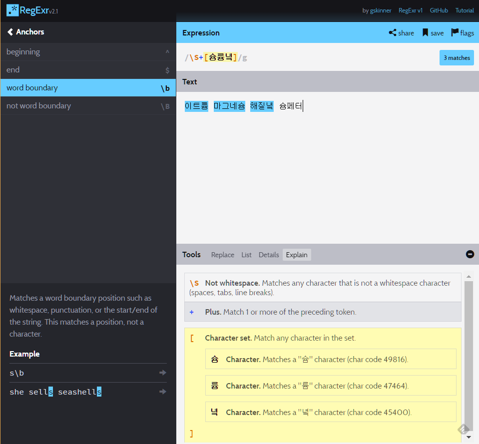가나다 순으로 구분하기
사용 기법: range → [다-딯], one or more → +
알파벳과 다르게 가나다 순에서 가는 가, 갸, 거, 겨 등등 가 하나만 놓고 봐도 매우 많다.
단어장을 만든다 할 때 정규표현식 없이 구분하려면 if문의 도가니에 빠지게 될 것이다.
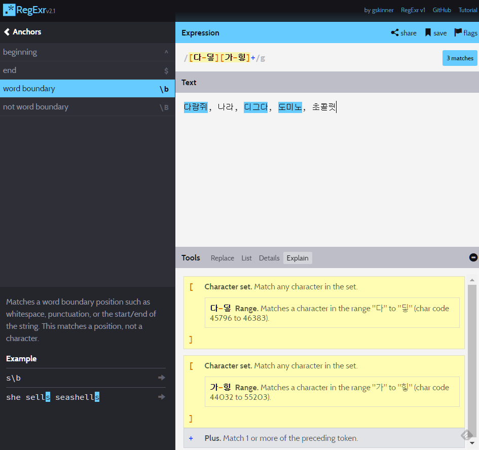
단어 뒤에 공백(스페이스바, 탭, 엔터키)가 아닌 경우에는 \S를 쓰면 안 된다.
if 문을 써서 다로 시작하는 단어, 도로 시작하는 단어, 대로 시작하는 단어, …
이 모든 케이스들을 구분한다면 상당한 삽질이 예상된다.몇 학년인지 구하기
사용 기법: Digit → \d, one or more → +, positive lookahead → (?=학년)
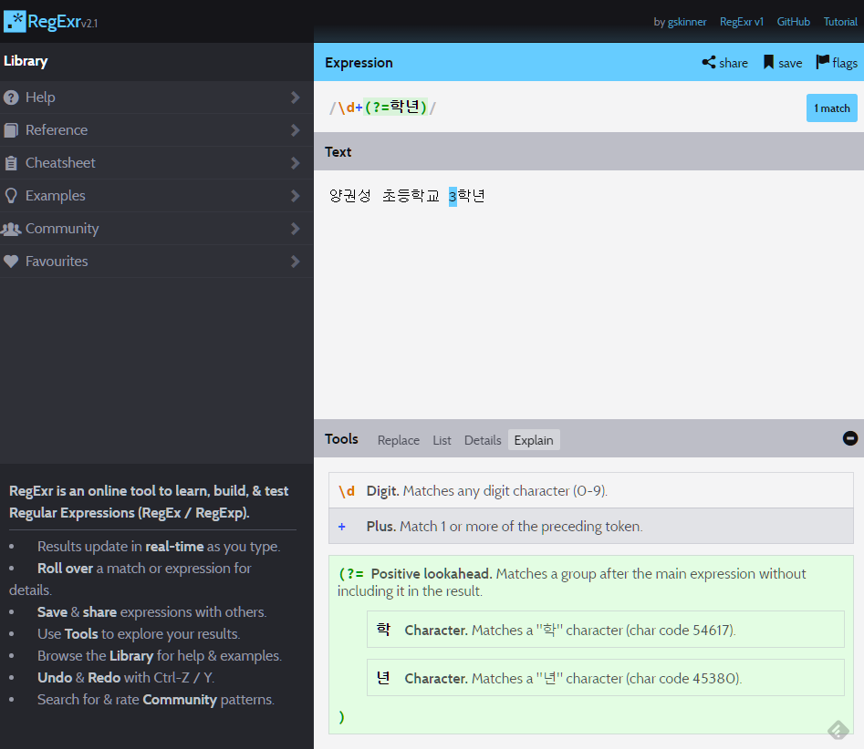
이는 몇 학년인지, 몇 반인지, 몇 동에 사는지 등등
구하려는 정보가 특정 접미어 앞에 존재할 때 유용하다.학번 구하기
사용 기법: capturing → (\d+), Digit → \d, one or more → +
이번에는 구하려는 정보가 특정 접두어 뒤에 뒤에 존재하는 정보를 구하려 한다.
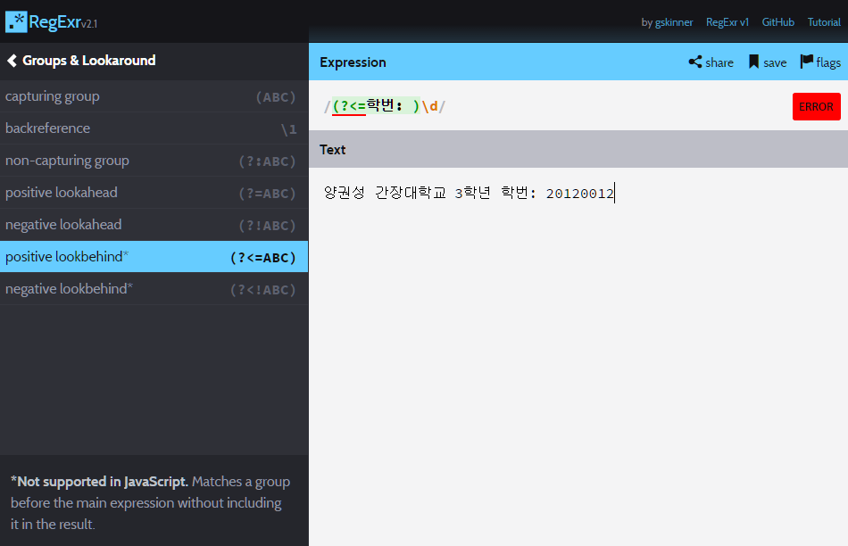
어쩔 수 없이 트릭을 써야한다. 출처는 아래 링크다.
Positive look behind in JavaScript regular expression
테스트 하려면 사이트가 아닌 콘솔 창 등등에서 테스트해야만 한다.123var str = '양권성 간장대학교 3학년 학번: 20120012';var regExp = /학번: (\d+)/;console.log(str.match(regExp)[1]); // '20120012'삼둥이 중에 둘 째 찾기
사용 기법: capturing → (.+), any character except line breaks → ., one or more → +
이제는 접두어와 접미어 사이에 낀 녀석을 찾아보자.
어… 예제가 적절치 않은데 그냥 이런 것도 있다고 생각하고 나중에 참고하면 될 것 같다.
이번에도 테스트 하려면 사이트가 아닌 콘솔 창 등등에서 테스트해야만 한다.
전국에 삼둥이는 참 많다.
그 중에 첫 째는 대한이, 셋 째는 만세, 둘 째는…?
둘 째의 이름을 구해보자!12345const name = `대한, 민국, 만세대한, 간장, 짱짱조선, 민국, 만세`;const regExp = /대한, (.+), 만세/;console.log(name.match(regExp)[1]); // 민국스팸 단어 정하기
사용 기법: capturing → (도박|마카오|카지노), or → |
스팸 게시물은 언제나 골칫거리다.
이를 약간이라도 줄이고자 필터링을 하는 방법으로 정규표현식이 많이 쓰인다.
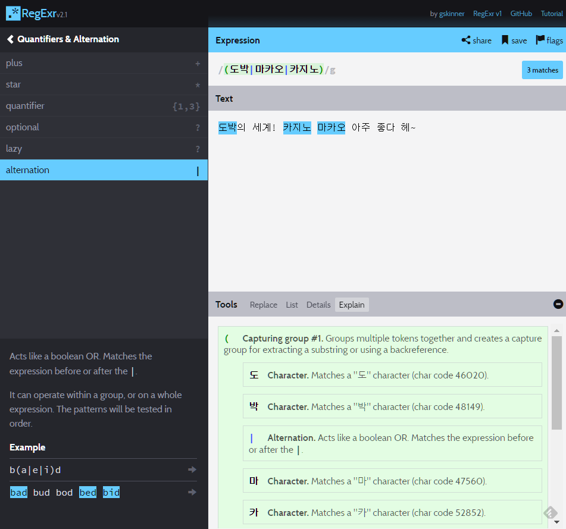비밀번호의 강도 높이기
요즘 크래커들의 크래킹 수준은 날이 갈 수록 높아져 비밀번호에 신경을 써야한다.
단순히 길다고 해서 끝나는 게 아니라 좀 더 복잡해야한다.
기본적으로 알파벳, 숫자, 특수기호가 들어가면서 8자 이상 20자 이하의 비밀번호를 작성해보자.
출처는 오래 전이라 까먹었다. 스택 오버플로우였는데…1/(?=.*[a-z])(?=.*\d)(?=.*[\{\}\[\]\/?.,;:|\)*~`!^\-_+<>@\#$%&\\\=\(\'\"])[a-z\d\{\}\[\]\/?.,;:|\)*~`!^\-_+<>@\#$%&\\\=\(\'\"]{8,20}/
이상한 외계어가 보인다.
그냥 가져다 쓰실 분은 쓰시고, 혹시 여기서 좀 더 보안을 강화하고 싶거나
호기심 충만하신 분들만 아래 내용을 보면 될 것 같다.
먼저 이걸 이해하기 전에 정규표현식의 and에 대해 알아야 한다.
기본적으로 자바스크립트의 정규표현식에서는 and 연산자가 없다.
아래와 같은 편법이 필요하다.
regexp logic and or
이해를 돕기 위해 정규표현식을 합성해서 공백을 넣었다.
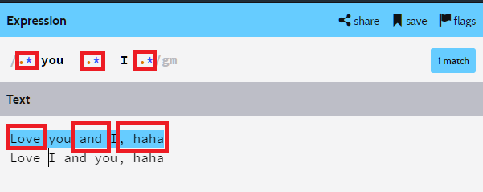
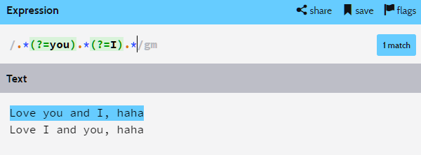
(?=)은 접미어 앞에 존재하는 단어를 긁어내는 연산자이다.
you 라는 단어 앞에 글자가 0개 이상 있고, I 라는 단어 앞에 글자가 0개 이상 있다.
풀어서 쓰면 아래와 같다.
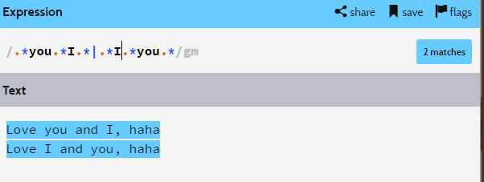
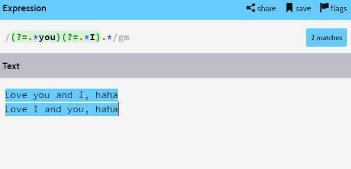
(?=.*word1)(?=.*word2)와 같은 기법으로 순서가 상관 없는 and를 구현할 수 있다.
그리고 어떠한 글자들을 허용할 것인지 .*을 이용하여 표현하였다.
여기까지 이해했다면 이제 위 비밀번호 외계어 정규 표현식을 이해할 수 있다.
하나씩 까서 보자.
- (?=.*[a-z])(?=.*\d)(?=.*[{}[]\/?.,;:|)*~`!^-_+<>@#$%&\\=(\’\”])
첫 번째 포함 키워드는 알파벳, 두 번째 포함 키워드는 숫자, 세 번째 포함 키워드는 특수기호
특수기호는 입맛에 맞게 더 넣던지 빼던지 하면 된다. - [a-z\d{}[]\/?.,;:|)*~`!^-_+<>@#$%&\\=(\’\”]
알파벳과 숫자, 특수기호의 입력을 허용 - {8, 20}
8자 이상 20자 이하
이를 다 조합해보면
알파벳, 숫자, 특수기호를 무조건 포함해야하며, 순서는 상관 없고,
알파벳, 숫자, 특수기호만 허용하고, 8자 이상 20자 이하
의 패스워드가 만들어지게 된다.
그럼…
알파벳, 숫자는 무조건 포함하면서 특수기호는 입력 해도 그만 안 해도 그만인 정규표현식은 어떻게 만들면 될까?
댓글 유도 및 방문자 여러분에게 질문을 던져본다.
and의 원리 파악하기
호기심이 멈추지 않아 and를 왜 (?=.*word1)(?=.*word2)와 같이 구현한 건지 파보았다.
머리가 돌아가지 않아 순전히 노가다였다.
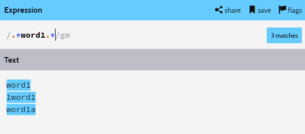
우선 word1이라는 단어가 포함되게 하려면 위와 같이 작성하여야 한다.
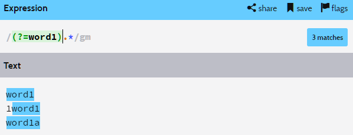
word1이란 단어 앞에 있는 패턴만 얻고 싶을 때 /패턴(?=word1)/을 쓴다.
하지만 정규표현식을 보면 (?=word1)앞에 아무런 패턴이 없다.
따라서 (?=word1)으로 얻어지는 패턴은 word1의 시작 위치이다.
그 시작 위치 이후에 .*, 즉 글자가 0개 이상이므로 위와 같이 word1의 시작 지점 이후부터의 문자만 가져온다.
두 번째 1word1에서 word1의 앞 부분인 1은 얻어오질 못하는 것이다.
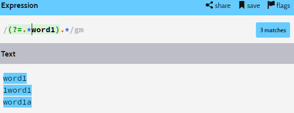
@+word1의 정보까지 얻어오려면 위와 같이 .*을 붙여줘야한다.
그래야 @+word1이 시작하는 위치를 얻어와서 1word1도 정상적으로 인식한다.
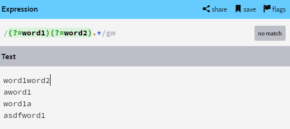
이 경우에는 왜 아무것도 못 얻어오는지 보자.
(?=word1)로 word1이 시작하는 위치를 얻어왔다.
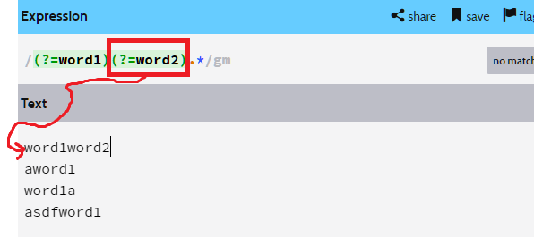
저 위치에서 (?=word2)가 실행이 된다.
저 위치에선 word2 앞에 있는 정보를 얻어올 수 없다.
word1이 가로막고 있기 때문이다.
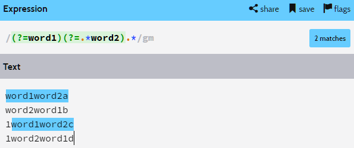
(?=word2)를 (?=.*word2)로 바꿔줘야 (?=word1)가 반환한 위치로 가도
가로막히지 않고 제대로 정보를 얻어올 수 있다.
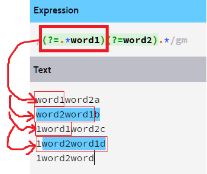
마지막 케이스는 word1이 없으므로 반환하는 위치가 없다.
처음에 .*을 붙여버리면 각 라인 별 빨간 박스로 표시해둔 .*word1의 정보까지 받아오는 것 같다.
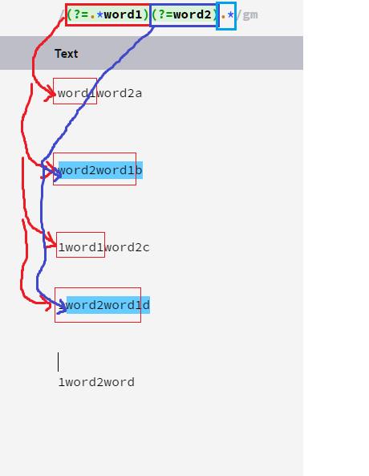
(?=.*word1)을 수행한 후에 빨간색 박스친 정보를 가지고 있다.
그 이후에 (?=.*word2)를 수행하면 word2가 시작되는 파란색 화살표 위치로 이동하게 된다.
그 이후에 .*이 실행되서 하늘색 결과를 얻어올 수 있다.
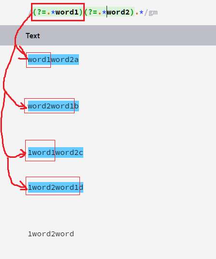
먼저 (?=.*word1)이 시작하는 위치와 정보를 저렇게 받아온다.
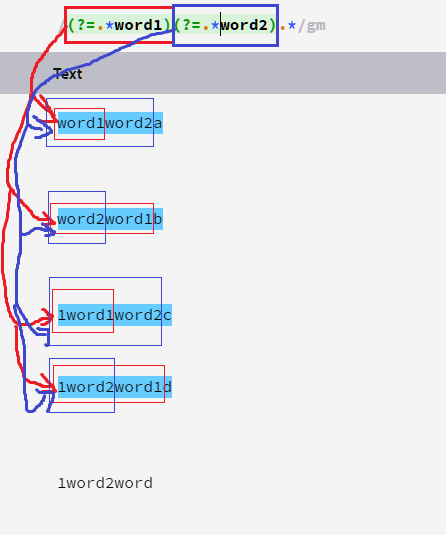
먼저 (?=.*word2)이 시작하는 위치는 (?=.*word1)이 시작하는 위치와 같다.
그리고 (?=.*word2)이 얻어오는 정보는 파란색 박스와 같다.
두 패턴이 얻어온 정보를 짬뽕해서 그 뒤에 .*이 실행되면서 원하는 정보를 얻어온다.
내가 이해한 게 잘 이해한 건지, 설명이 틀리지는 않았는지는 장담하지 못하겠다…
넘나 어렵다…
그냥 쓰기나 할 걸 괜히 파고 든 것 같다는 생각이 살짜쿵 든다.